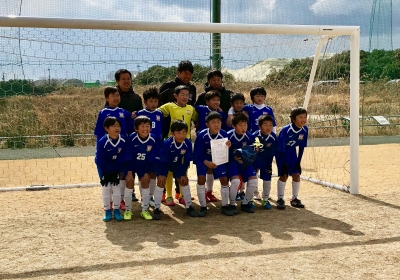
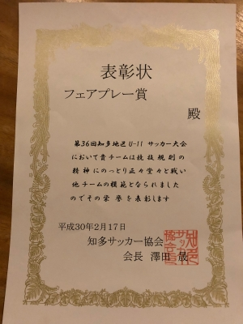

U-11 順位決定トーナメント 2018-2-17
この週末、17日(土)は
知多地区U-11順位決定トーナメントの準決・決勝が行われました。
準決勝
vs 名和SS 1-0 勝ち
以前から組織の力を最大限に活かして戦ってくるチームだという認識で、
かなり研究されて対策されるだろうことは予想していましたが・・・
ハルの所属チームのように、どちらかいうと個の力に頼るチームにとっては
正直戦いにくい相手かな・・・と思います。
実際、手厚いディフェンスに阻まれて前半は0-0で折り返しました。
後半、相手の隙をつく絶妙なスルーパスをもらい、
なんとか1点獲って勝つことができました。
決勝
vs A.F.C AGUI 2-1 勝ち
・・・予想ではリーグ1位のVoiceが来るかと思っていたのでめっちゃびっくり。
でも、逆にこのトーナメント戦、来年県リーグに行くためには優勝するしかなくなり
ヤツらにもちょっとスイッチが入った感じになったかな ?
AGUIは名和に比べると個でも打開できるかな ?・・・というチームですが、
ゴールキーパーの子がちょー上手いデス(笑)。
それにスピードのあるアタッカーがいて、一瞬の気の緩みが命取りになる
という、常に緊張感を持って対する必要のある相手だったかな・・・。
1点リードで最終盤まで行って、「もうすぐ終わり」という
一瞬の気の緩みをつかれ、同点に追いつかれました。
延長戦に入り後半、なんとか相手ディフェンスを崩して
得点することができました。

・・・はぁぁぁぁぁ、よかったぁぁぁぁ・・・。
試合は2試合とも正直、いい試合だったとは言い難い内容でしたが、
下手な鉄砲数打ちゃ当たる方式の一発火力で取った得点ではなく、
パスの崩しからの得点だったこと、それから何より
来年度の県リーグ参加を「勝って」自らの力で決めたことが
ホントによかった・・・。
みんながんばったよ。
おめでとう !
↑みんなで写真撮って、もらった賞状みんなでコピーしようね〜
・・・と、「お祝いだ〜」「祝賀会だ〜」と盛り上がって、
ふと、賞状見て「 ? 」てなった(汗)。
↓

・・・ねぇ、「フェアプレー賞」ってなんだろー(大汗)。
(チーム名は「自分で書いてね」て渡されたのでまだ入ってません。)
ねぇっ !! なんで「優勝」じゃないのっっ !?
まさかと思うけど、間違えてるとかないよね(汗)。
・・・いちおー日付とか知多サッカー協会の印も押されてんだけど
「優勝」の賞状が在庫切れちゃったから
「フェアプレー賞」でいっか ! てか・・・ ? おいおいおい !! (汗)
・・・誰か知多サッカー協会に問い合わせする勇気のある人、いませんか〜 ? (汗)